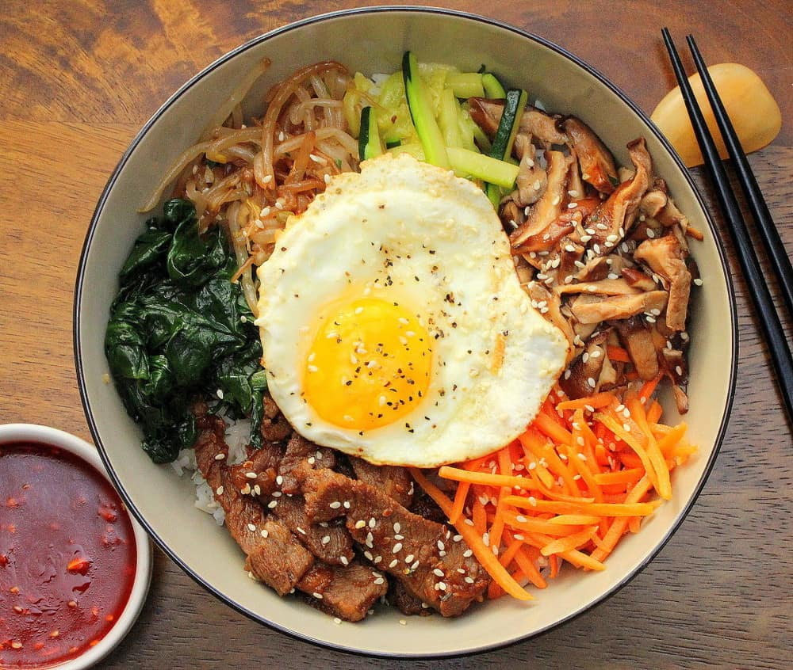

Bibimbap

Description
Homemade bibimbap might look fancy, but it's actually relatively easy to do. You can add or remove as many ingredients as you want to make it the perfect bibimbap for you. Isn't that so nice? Wow you're welcome!
Ingredients
- Bibim Gochujang Sauce
- Marinated Steak
- Mushrooms
- Spinach
- Fresh Carrot Kimchi
- Bean Sprouts
- Rice
Steps
- Meat Method
- Mushroom Method
- Cucumber Method
- Fresh Carrot Kimchi Method
- Garlic Spinach Method
- Bean Sprouts Method
- Assembly Method